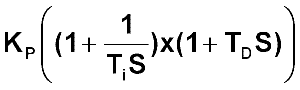
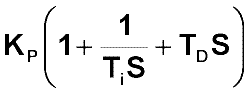
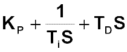

|
| [Home] [About us] [Contact us] [Training] [Optimisation services] [Protuner] |
| [Loop signatures] [Case histories] [Continuous loop performance monitoring] |
|
Control Loop Case History 93 SPECIFYING A DIGITAL FEEDBACK CONTROLLER - part 1 Musa Mtshali, a C&I technician with a pulp company in Swaziland, recently asked me to write a Case History article listing all the important points that should be included in the specifications when a company requests tenders for a DCS or PLC control system. Here it is, Musa. As mentioned many times in past articles, I have been in hundreds of plants situated across many countries around the world, and still I have never met anyone in these plants who really understands the operation, the various features, and the options generally available in their digital control system (normally a DCS or PLC system). As a result many of these plants are not working as well as they could, as the control systems are not configured optimally. This poor control can, and has resulted in sometimes huge loss in potential extra profits. To site just a few examples from plants I have worked in:
Many people do not believe me when they read things like this, but I come across similar situations all the time. The main problem is that as I have repeatedly said, very few people really understand the practicalities of feedback control systems, as they have never been on courses that teach these things. Practical control teaching is very different from the studies most people do when they learn control at an academic institution. Anyway these are the things I believe a prospective purchaser of a control system should specify or certainly investigate: Basic Controller Algorithm The Series algorithm is in my opinion the preferred, as I have found that the D term operates more efficiently than the others, and offers better cancellation on certain process dynamics. Series:  Where KP is controller gain, Ti is integral time in seconds/repeat, TD is derivative time in seconds, and S is the Laplace operator. The Ideal algorithm unfortunately appears to becoming the most popular on most systems. However, although not as good as the Series, it is not too bad, and if the Series is not available, then it can be used. Ideal (ISA):  The Parallel algorithm which is the default algorithm offered by some very well known makes of PLC's, and also by at least one well know make of DCS should never be used. The problem with it is that integral and derivative terms are effectively altered every time the P gain is changed, which makes tuning a nightmare. (See article P1-12 in my first Loop Signature series for an explanation). Parallel:  Implementation of the PID Algorithm The preferred form of digitisation of the PID algorithm is definitely the positional implementation. It is generally more accurate, but does use more processing power than the other, the incremental (or velocity) implementation. If the incremental implementation is used, then you should ensure that you can switch off the I term on occasions when only P or PD control is required. Also ensure that integral windup can be prevented with the incremental implementation. This is also very important when using the controller as the primary controller in a cascade control system, or as a controller in a selective control system, where integral must be frozen from an external signal under certain conditions. Tuning Parameters Some manufacturers limit the PID tuning settings which may limit the settings needed for certain conditions. The following are suggested ranges for the tuning parameters:
This article will be concluded in the next Case History article which should be published in two months time. Michael
Brown is a specialist in control loop optimisation, with many years of
experience in process control instrumentation. His main activities are
consulting, and teaching practical control loop analysis and
optimisation. He gives training courses which can be held in clients'
plants, where students can have the added benefit of practising on live
loops. His work takes him to plants all over South Africa, and also to
other countries. He can be contacted at:
|